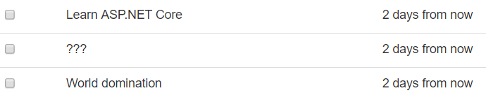

添加外来软件包
选择诸如 .NET 这种成熟的生态系统，其最大的优势之一，就是第三方软件包和插件的量非常庞大。正如其它的软件包系统一样，你可以下载并安装 .NET 软件包，以获取协助，来完成几乎任何能想到的任务和难题。
NuGet 即是包管理工具，也是官方的软件包仓库（位于 https://www.nuget.org）。你可以在网页上检索 NuGet 软件包，并在自己的机器上使用终端（或者 Visual Studio 里的图形界面）安装它们。
安装软件包 Humanizer
上一章结尾处，待办事项 程序展示的 待办事项条目 看起来是这样的：
“截止日期”一栏所展示的日期，这种格式（叫做 ISO 8601）对机器来说很方便，但是人类看着就不爽了。如果看到的是“还剩 X 天”这样，不是更好吗？
你完全可以自己写一段代码，把一个日期转换成更人性化的字符串，不过幸运的是，还有个更便捷的方法。
NuGet 上的软件包 Humanizer (https://www.nuget.org/packages/Humanizer) 解决了这种问题，它提供的方法可以“人性化(humanize)” 或者说 改写 几乎任何东西：日期、时间、时长、数字等等。它是个很好很有用的开源项目，根据 MIT 许可证发布。
要把它加入到你的项目里，在终端窗口运行这个命令：
dotnet add package Humanizer
如果你浏览项目文件 AspNetCoreTodo.csproj，会看到新增了一行 PackageReference，引用了 Humanizer。
在视图中使用 Humanizer
要在代码里使用一个软件包，你通常需要在文件顶端添加一个 using 语句，以导入该软件包的内容。
既然 Humanizer 将用于在视图中改写日期，你可以直接在视图里使用它。首先在视图顶端添加一个 @using 语句：
Views/Todo/Index.cshtml
@model TodoViewModel
@using Humanizer
// ...
然后，修改那行写着 DueAt 方法的代码，使用 Humanizer 里的 Humanize 方法：
<td>@item.DueAt.Humanize()</td>
现在，日期的可读性大大提高了：

NuGet 上有着大量的软件包，从 XML解析 到 机器学习 到 Twitter发帖，包罗万象。ASP.NET Core 自身，在表象之下，也只不过是添加到你项目里的一个 NuGet 软件包集合。
使用
dotnet new mvc创建的项目文件包含一条指向Microsoft.AspNetCore.All软件包的引用，这是个便捷的“元软件包(metapackage)”，它引用了你在项目中所需的所有其它 ASP.NET Core 软件包。这样，你就不必在项目文件里添加数百个软件包的引用了。
下一章里，你将使用另一套 NuGet 软件包(一个叫 Entity Framework Core 的系统)，编写代码与数据库进行交互。
Add external packages
One of the big advantages of using a mature ecosystem like .NET is that the number of third-party packages and plugins is huge. Just like other package systems, you can download and install .NET packages that help with almost any task or problem you can imagine.
NuGet is both the package manager tool and the official package repository (at https://www.nuget.org). You can search for NuGet packages on the web, and install them from your local machine through the terminal (or the GUI, if you're using Visual Studio).
Install the Humanizer package
At the end of the last chapter, the to-do application displayed to-do items like this:
The due date column is displaying dates in a format that's good for machines (called ISO 8601), but clunky for humans. Wouldn't it be nicer if it simply read "X days from now"?
You could write code yourself that converted an ISO 8601 date into a human-friendly string, but fortunately, there's a faster way.
The Humanizer package on NuGet solves this problem by providing methods that can "humanize" or rewrite almost anything: dates, times, durations, numbers, and so on. It's a fantastic and useful open-source project that's published under the permissive MIT license.
To add it to your project, run this command in the terminal:
dotnet add package Humanizer
If you peek at the AspNetCoreTodo.csproj project file, you'll see a new PackageReference line that references Humanizer.
Use Humanizer in the view
To use a package in your code, you usually need to add a using statement that imports the package at the top of the file.
Since Humanizer will be used to rewrite dates rendered in the view, you can use it directly in the view itself. First, add a @using statement at the top of the view:
Views/Todo/Index.cshtml
@model TodoViewModel
@using Humanizer
// ...
Then, update the line that writes the DueAt property to use Humanizer's Humanize method:
<td>@item.DueAt.Humanize()</td>
Now the dates are much more readable:
There are packages available on NuGet for everything from parsing XML to machine learning to posting to Twitter. ASP.NET Core itself, under the hood, is nothing more than a collection of NuGet packages that are added to your project.
The project file created by
dotnet new mvcincludes a single reference to theMicrosoft.AspNetCore.Allpackage, which is a convenient "metapackage" that references all of the other ASP.NET Core packages you need for a typical project. That way, you don't need to have hundreds of package references in your project file.
In the next chapter, you'll use another set of NuGet packages (a system called Entity Framework Core) to write code that interacts with a database.